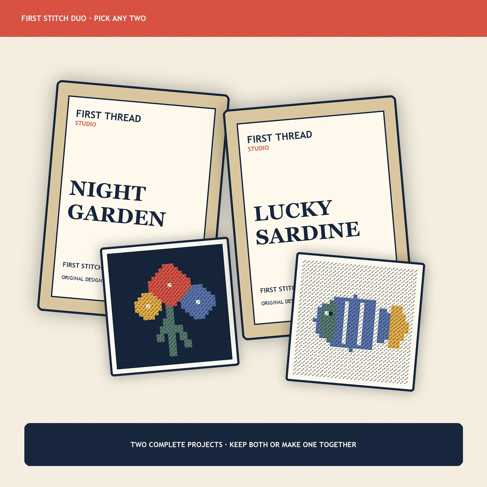

Best-value gift
Pick Any Two First Stitch Minis
Two complete mini projects: keep both or make one alongside someone you like.
$69.00 USD
Pre-launch preview. This product is not for sale until its sample, material, cost, safety, and ship-date gates pass.
Join the founding dropIncludes2 complete planned kits
DesignsChoose any two
ExperienceNone
ShippingPlanned U.S. shipping included
SafetyAdult use; contains blunt needles
Two small projects make a better first craft night. Choose two original First Stitch Mini designs and receive two complete planned kits—each with its own canvas, color set, beginner tools, quick-start card, and video help.
The duo is designed for a friend night, a low-pressure date, or one project now and one next. Each kit remains individually usable; no materials need to be shared.
- Two complete mini kits
- Planned U.S. shipping included
- True-beginner format
- Choose any two founding designs
- Adult use; each kit contains a needle
Pre-launch note: the bundle will open only after each included design passes sample and novice testing.